몽망이 크리에이티브 디렉션 — 후보 4안
AI 이미지는 방향 탐색용입니다. 각 안의 마지막 이미지가 "실제 앱 렌더"에 가까운 것입니다(없는 안은 아직 격차가 큼).
① 하루 한 획 경쟁 디렉터 · 팀 1순위 후보
한지 위 먹점 하나에서 시작. 하루 한 획을 그으면 몸이 되고, 오래된 획은 바랜다. 몽(夢)·망(忘). 이름의 E 가로획 세 개 = 'E 빗' 종 표식.
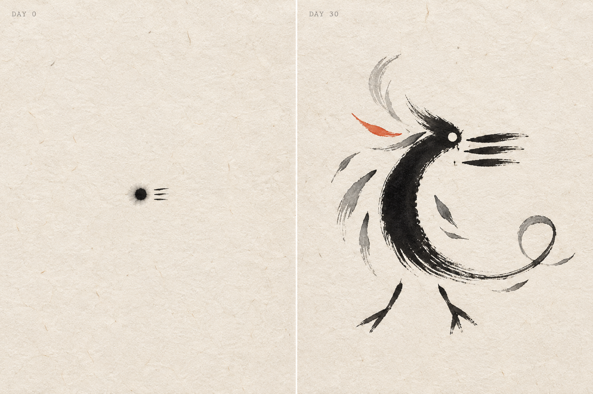
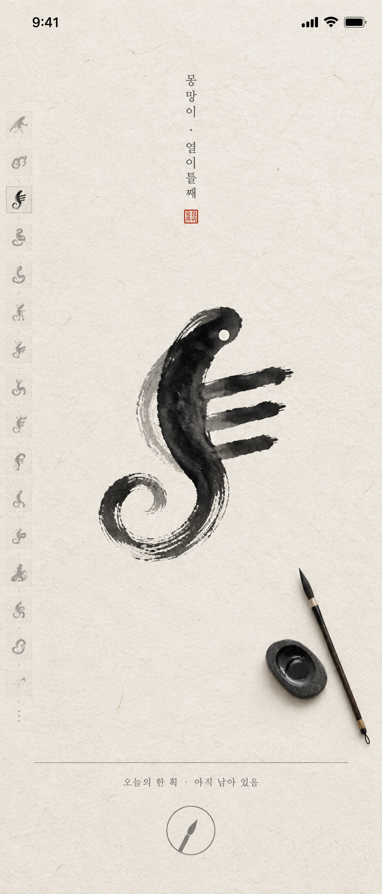
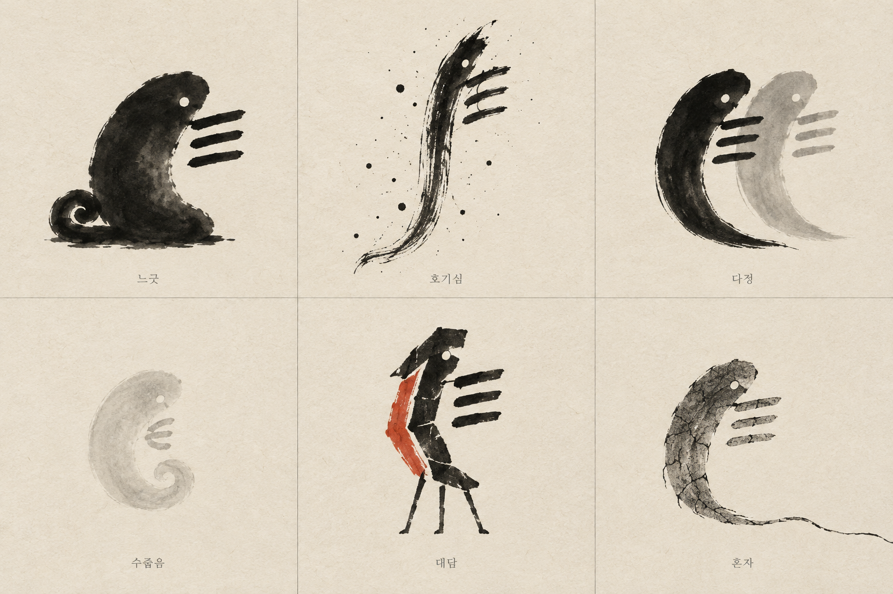
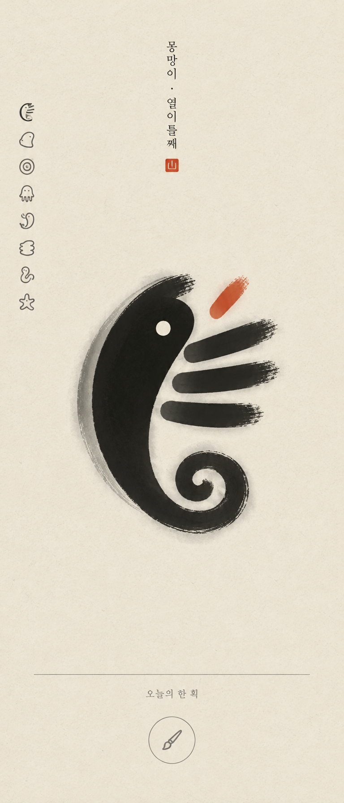
강점이름과 메커닉과 그림이 한 줄로 묶임. 벡터 획 + 비백 셰이더라 실제 구현이 시안에 가장 가까움. 매일 한 획 = "하루하루 키운다"를 문자 그대로.
위험해마·카멜레온·새로 읽힘. 하루 한 획은 하루 플레이가 짧아 3개월 지속성이 약할 수 있음. 먹 = 무채색이라 감정 폭.
② 분청 꼬집 첫 디렉터 1순위
꿈 흙 한 줌을 꼬집고 쓰다듬어 빚는다. 손자국이 분청 무늬로 남고 밤마다 가마가 굳힌다.
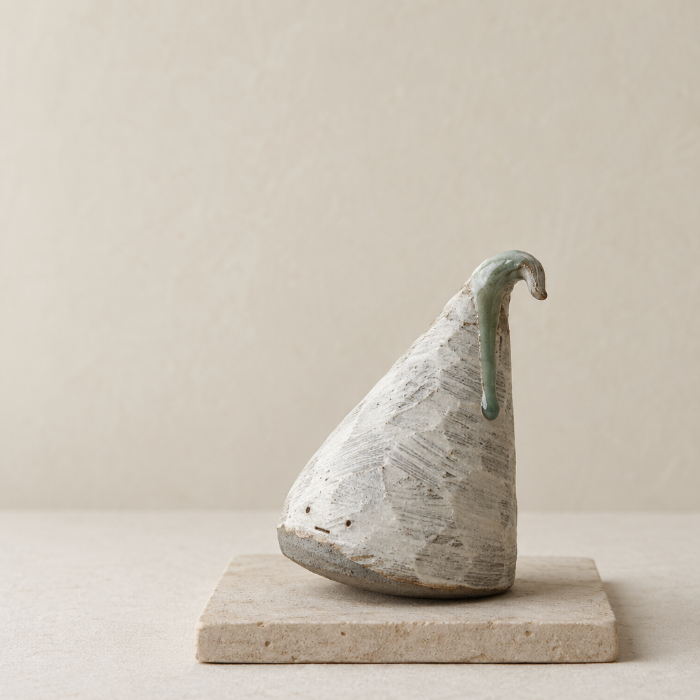
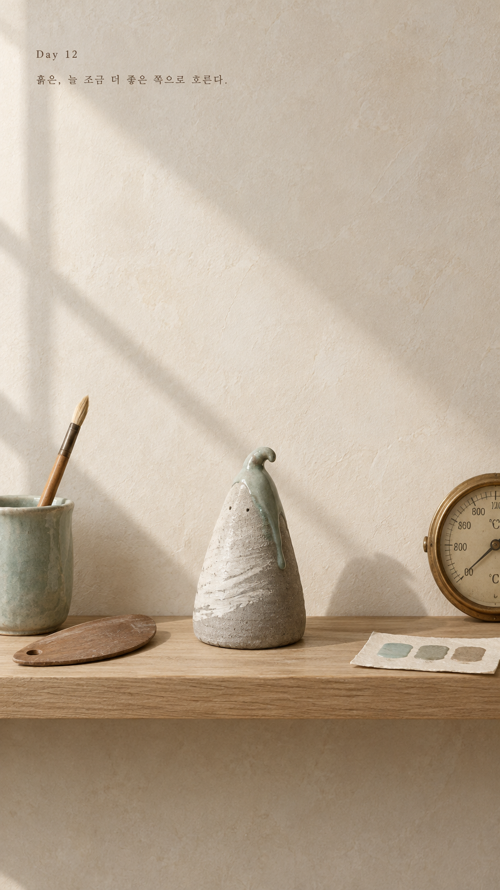
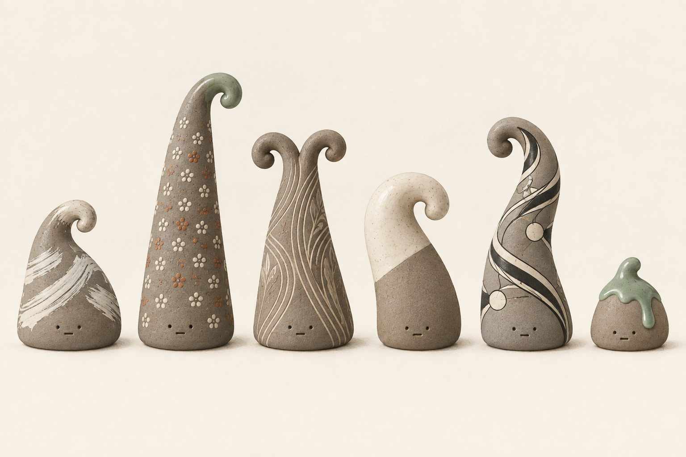
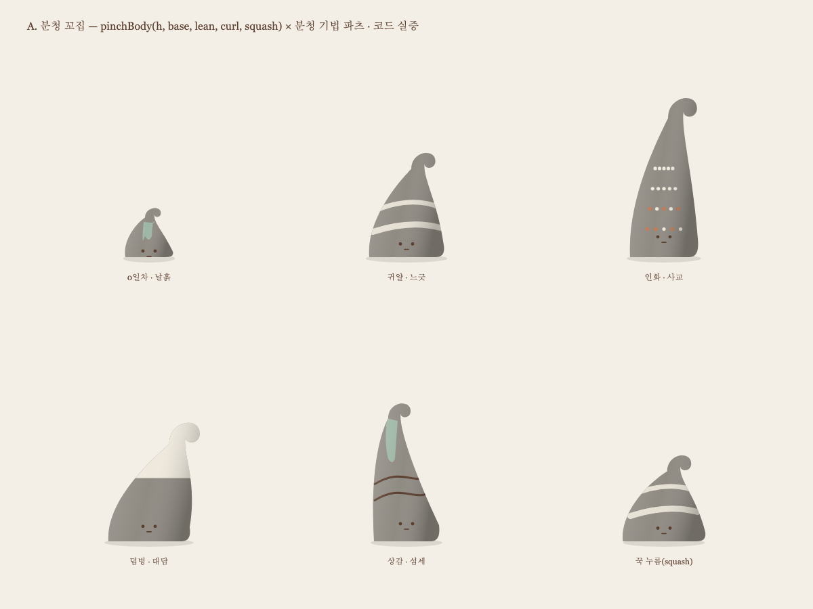
강점만지는 손맛과 애착. 공방 사물 UI가 가장 세련됨. 분청 기법 = 파츠 카탈로그.
위험실제 렌더가 시안의 20~30%(마지막 이미지). 오브제로 읽혀 애착 약함, 💩·아이스크림 실루엣.
③ 입김 창 경쟁 디렉터 2안
김 서린 밤 창문에서 혼자 서리지 않는 빈자리가 몽망이. 입김과 손가락 닦기로 키우고, 몸 안으로 보이는 바깥 풍경이 성향.
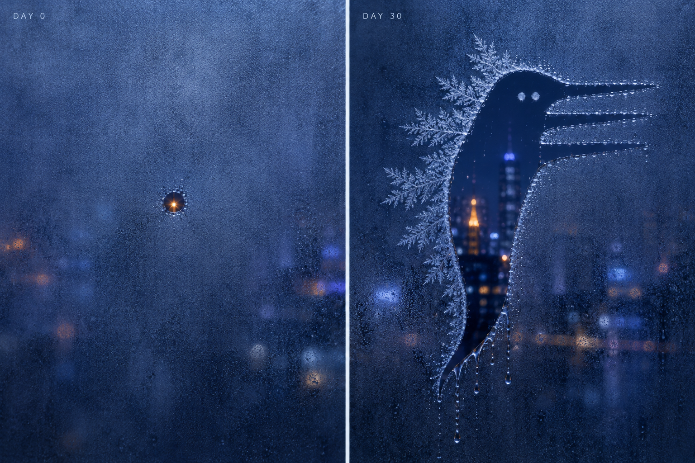
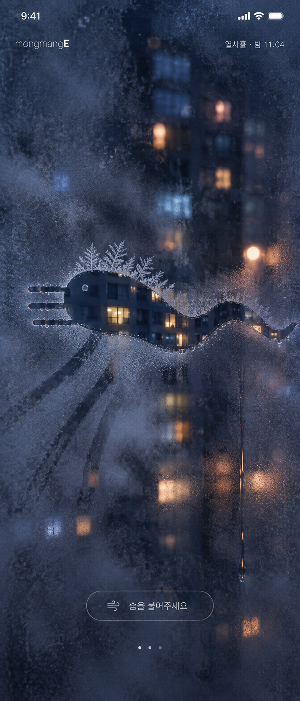
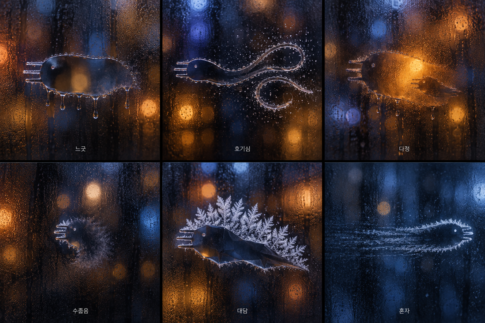
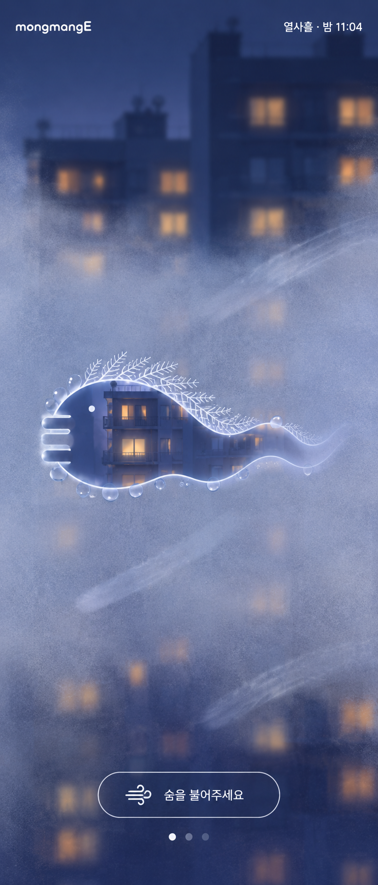
강점가장 본 적 없음. "부재로 존재하는 몸"이라는 발상.
위험사진풍 격차 큼, 마이크 입력은 권한·공공장소 부담, 늘 밤.
④ 먹 한 방울 첫 디렉터 3안
잠의 수면에 떨어진 먹 한 방울. 아침마다 한지에 꿈을 찍어 낸다.
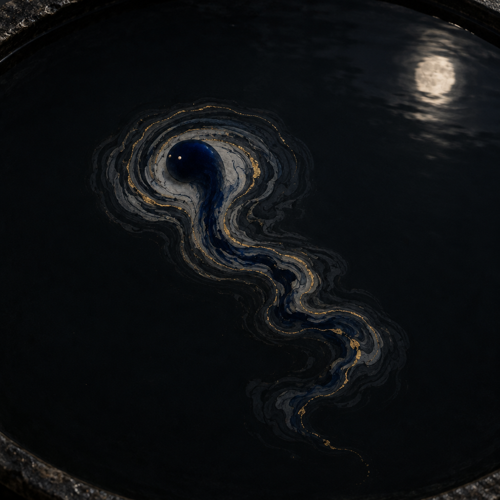
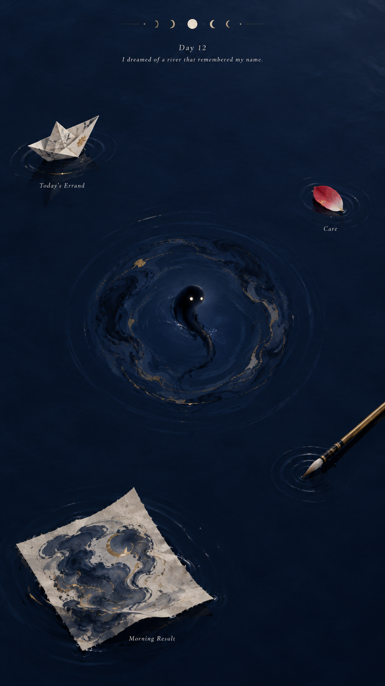
강점가장 아름다움. 아침 인화 카드 = 공유력.
위험검댕·올챙이·유령으로 읽힘, 늘 밤.